결론부터. 디버깅의 8할은 값을 들여다보는 일이 아니라 어디서 멈출지 정하는 일입니다. 그래서 이 노트는 기능 설명이 아니라 세 가지 질문으로 구성했습니다.
① 디버거를 어떻게 켜는가 · ② 원하는 지점에서 어떻게 잡는가 · ③ 재현이 안 될 때 값을 어떻게 만드는가.
모든 캡처는 실제 작업 화면이고, 빨간 박스와 번호가 눌러야 할 지점입니다.
진입 방법은 딱 하나의 기준으로 갈립니다. 멈출 위치를 아는가. 모르면 /h, 알면 브레이크포인트입니다.
/h — 위치를 모를 때명령창에 /h 를 입력하고 Enter. 화면 하단에 "디버깅 켜짐" 메시지가 뜨고, 그 다음 화면 전환부터 디버거가 뜹니다. 즉 /h 를 누른 직후가 아니라 다음 액션(실행 · 저장 · 버튼 클릭)에서 잡힙니다.
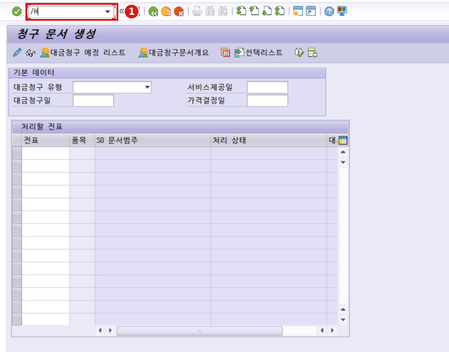
/H 입력.
/h 입력 후 Enter → 이 화면의 실행 버튼을 누르는 순간 디버거 진입./h, /H 둘 다 동작합니다. 한 번 켜면 다음 한 번만 유효하고, 디버거에서 나오면 다시 꺼집니다.
| 명령 | 범위 | 쓰는 때 |
|---|---|---|
/h | 세션 디버깅 — 내 ABAP 코드 수준에서 정지. 표준 · 시스템 코드는 건너뜀 | 평소 쓰는 것 |
/hs | 시스템 디버깅 — 시스템 프로그램 · 표준 FM 내부까지 진입 | 표준 로직을 파야 할 때만. 스텝 폭증 + 권한 필요 |
소스에서 라인을 직접 지정하는 방식입니다. 종류가 세션 BP와 외부(External) BP 두 개인데, 겉보기는 같고 유효 범위가 다릅니다. 이 차이를 모르면 "BP를 걸었는데 안 멈춘다"에서 30분을 태웁니다.
SE38 · SE80 소스 편집기 상단, 패턴 버튼 바로 왼쪽에 빨간 정지 표지 아이콘 두 개가 붙어 있습니다. 멈추고 싶은 행에 커서를 두고 이 버튼을 누르면 그 행에 BP가 걸립니다. 한 번 더 누르면 해제.
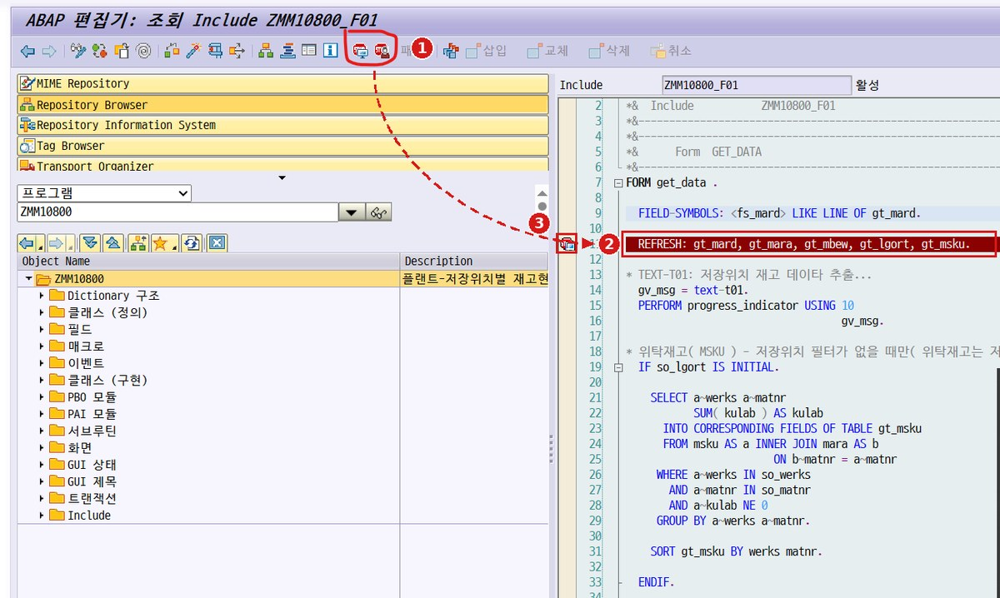
ZMM10800_F01 — 툴바 버튼과 그 결과가 걸린 행.
패턴 왼쪽). 커서를 ②의 행에 두고 이 버튼을 누른 것입니다.REFRESH: gt_mard, ... 가 라인 전체 빨간 반전. 커서가 있던 행에 그대로 걸립니다.소스에서 우클릭해도 됩니다 — Create Session Breakpoint(세션) · Create User Breakpoint(외부)가 컨텍스트 메뉴에 있습니다 (→ 그림 19).
커서 위치가 곧 BP 위치입니다. 엉뚱한 행에 걸렸다면 커서가 그 행에 있었던 것. 또 실행문이 아닌 행(주석, DATA 선언, 빈 줄)에는 걸어도 무시되거나 다음 실행문으로 밀립니다.
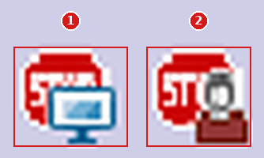
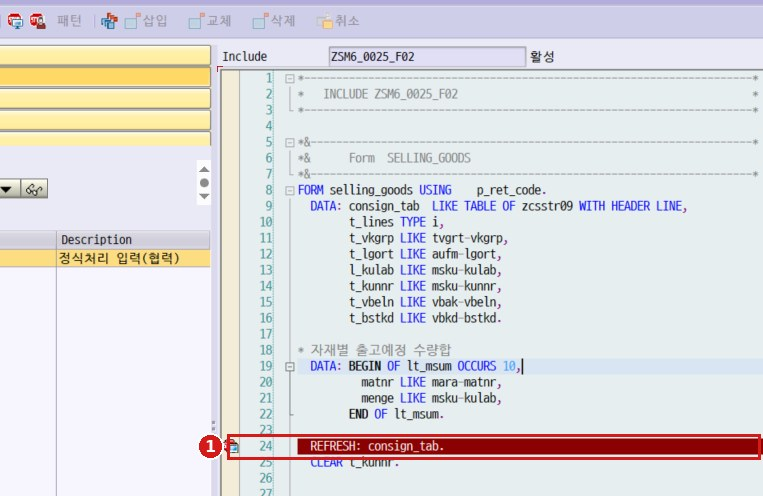
REFRESH: consign_tab. 이 라인 전체 빨간 반전.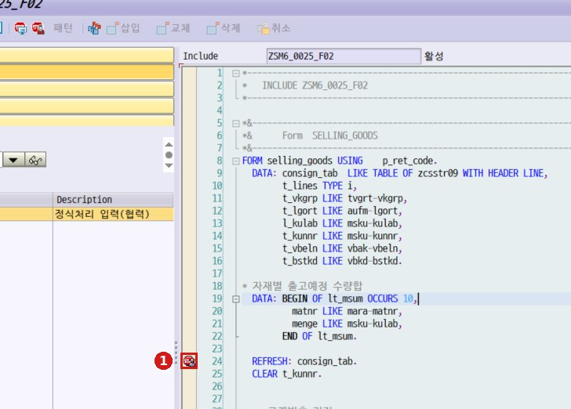
| 구분 | 세션 BP | 외부 BP |
|---|---|---|
| 버튼 | 정지표지 + 모니터 | 정지표지 + 사람 |
| 화면 표시 | 라인 전체 빨간 반전 | 좌측 여백 아이콘만 |
| 유효 범위 | 현재 로그온 세션 | 사용자 ID (로그오프해도 유지) |
| 소멸 시점 | 로그오프 시 자동 소멸 | 수동으로 지워야 소멸 |
| 최대 개수 | 30개 | 30개 |
| 사전 설정 | 없음 — 바로 동작 | 필요 (→ 1-3) |
| 주 용도 | SE38 / SE80에서 내 실행 디버깅 | BSP · RFC · HTTP · 웹 · 인터페이스 |
왜 외부 BP가 필요한가. BSP 화면, RFC 호출, HTTP 요청은 내 GUI 세션이 아닌 별도 워크프로세스에서 실행됩니다. 그래서 세션 BP는 원리적으로 걸리지 않습니다.
외부 BP를 찍기만 하면 되는 게 아닙니다. 어느 사용자 ID로 들어오는 요청을 잡을지를 설정에서 먼저 지정해야 합니다. 여기가 비어 있거나 다른 ID면 BP를 걸어도 아무 일도 일어나지 않습니다.
외부 BP는 "소스의 이 줄"이 아니라 "이 사용자 ID로 들어오는 외부 요청이 이 줄을 지날 때"를 조건으로 겁니다. 줄만 맞고 ID가 틀리면 조건이 성립하지 않으므로 그냥 지나갑니다 — 에러도 경고도 없습니다.
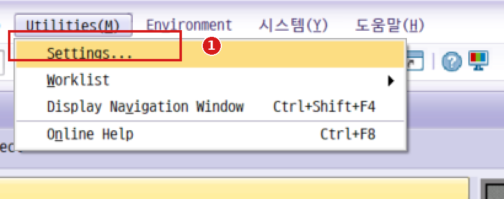
Utilities(M) > Settings…
User-Specific Settings 팝업. 한글 GUI: 유틸리티(M) > 세팅(N)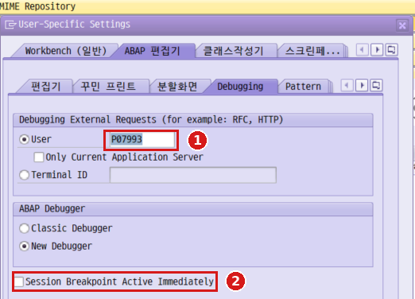
ABAP 편집기 > Debugging 탭
P07993)라서, 호출 주체가 다르면 반드시 바꿔야 합니다.| 호출 유형 | 넣을 ID | 확인 방법 |
|---|---|---|
| BSP · Web Dynpro | 웹 화면에 로그인한 SAP 사용자 ID | SM04 · AL08 |
| RFC (외부 시스템 → SAP) | 통신용 전용 계정 — RFC Destination에 지정된 ID | SM59 → Destination → 로그온 탭 |
| HTTP · 웹서비스 | 서비스에 설정된 ID | SICF → 서비스 → 로그온 데이터 |
| 배치 · 잡 | 잡 생성자 또는 스텝 실행 사용자 | SM37 → 잡 상세 → 스텝 |
RFC · 인터페이스 건인데 내 개인 ID를 그대로 두는 것. 외부 시스템은 대개 전용 통신 사용자로 붙기 때문에 내 ID로는 절대 안 잡힙니다. SM59에서 먼저 확인하세요.
| 옵션 | 의미 |
|---|---|
| Only Current Application Server | 현재 접속한 앱 서버로 들어오는 요청만 대상. 다중 앱 서버 환경에서는 체크를 풀어야 다른 서버로 들어온 요청도 잡힙니다. 안 잡힐 때 제일 먼저 볼 곳 |
| Terminal ID | 사용자 ID를 특정할 수 없을 때(공용 계정, 익명 웹 요청) 단말 기준으로 잡는 방식. User 대신 이쪽을 선택 |
| Classic / New Debugger | New Debugger 권장. 변수 · 내부테이블 조회, Debugger Layer 등 이 노트의 기능 대부분이 New Debugger 기준 |
| 순서 | 할 일 | 확인 포인트 |
|---|---|---|
| 1 | Utilities > Settings > ABAP 편집기 > Debugging | User = 실제 호출 주체 ID |
| 2 | Only Current Application Server | 다중 서버면 체크 해제 |
| 3 | New Debugger 선택 | Classic이면 기능 제약 |
| 4 | 소스에서 외부 BP(사람 아이콘) 설정 | 세션 BP(모니터)와 혼동 금지 |
| 5 | 웹 · 인터페이스에서 해당 기능 호출 | GUI 세션에 디버거가 뜸 |
| 6 | 작업 후 BP 삭제 + User 원복 | 이 단계를 빼먹으면 사고 |
이 설정에 남은 사용자 ID + 지워지지 않은 외부 BP 조합으로, 같은 ID로 도는 인터페이스 · 배치가 디버거에 걸려 멈춥니다. 작업이 끝나면 Breakpoints > Delete all BPs, 그리고 이 설정의 User도 원복.
네 키의 차이는 하나로 정리됩니다. 호출문(PERFORM · CALL FUNCTION · LOOP)을 만났을 때 안으로 들어가느냐, 그리고 어디까지 한 번에 실행하느냐.
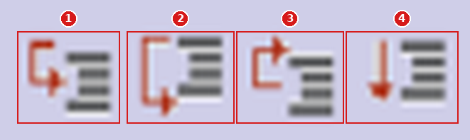
| 언제 | 무엇을 |
|---|---|
F6를 기본으로Step Over | 일단 F6로 훑으며 어느 호출에서 값이 깨지는지 범위를 좁힙니다. 처음부터 F5로 들어가면 표준 코드에서 길을 잃습니다 |
범위가 좁혀지면 F5Step Into | 문제의 호출문에서만 F5로 진입. "여기 들어가기 전엔 정상, 나오니 깨졌다"를 확인한 뒤 안으로 |
잘못 들어왔으면 F7Step Out | F5를 눌렀다가 표준 FM 내부로 빨려들어갔을 때 즉시 F7. 여러 겹이면 F7을 겹쳐 누름 |
LOOP 대량건은 F8Continue | LOOP 안에 BP를 두고 F8로 회차를 넘깁니다. 특정 회차만 필요하면 SY-TABIX Watchpoint (→ 2-3) |
호출문 내부에 BP가 걸려 있으면 F6로 통과시키려 해도 그 BP에서 멈춥니다. 의도한 게 아니면 BP를 먼저 지우세요.
운영에서 실제로 막히는 지점은 대부분 여기입니다. 내 화면에서 재현이 안 되는 건들 — 남의 세션에서 도는 것, 밤에 배치로 도는 것, 저장 이후에 벌어지는 것.
SM50은 이 앱 서버의 워크프로세스 현황판입니다. 누가 어떤 프로그램을 돌리는 중인지 보이고, 그 프로세스에 디버거를 붙일 수 있습니다.
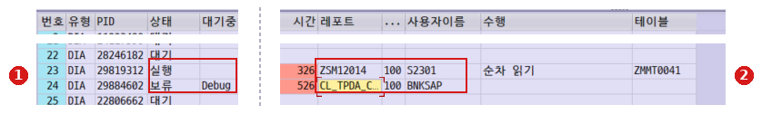
SM50 프로세스 개요 — 컬럼 헤더(위)와 22~25번 행(아래). 가운데 빈 컬럼은 접었습니다.
실행(처리 중), 24번은 보류 + Debug. 보류 + Debug 조합이 보이면 그 프로세스는 누군가의 디버거에 잡혀 멈춰 있는 것입니다.ZSM12014 를 S2301 이 실행 중. 24번의 CL_TPDA_... 는 New Debugger의 내부 클래스라, 디버깅에 붙으면 레포트명이 이렇게 바뀝니다.| 항목 | 내용 |
|---|---|
| 붙는 법 (디버깅) | 대상 프로세스 행 선택 → 메뉴 관리(A) > 프로그램(R) > 디버깅(D) → 확인 팝업에서 예. 툴바가 아니라 메뉴바에 있습니다. (→ 그림 22) |
| 세부 조회 (디버깅 아님) | 행 선택 후 세부사항 버튼 — 그 프로세스의 DB · 세션 · 메모리 통계를 봅니다. 디버거를 붙이는 기능이 아닙니다. (→ 그림 20) |
| 상태 읽는 법 | 대기 = 놀고 있음 · 실행 = 처리 중 · 보류 = 멈춤(디버깅 · 락 대기 등) |
| 덤으로 | 상단 요약에 다이얼로그 50/46(총/가용) 처럼 프로세스 여유가 보입니다. "시스템이 느리다" 신고가 오면 여기부터 |
대상 프로세스 행을 클릭해서 선택합니다.
메뉴 관리(A) > 프로그램(R) > 디버깅(D)
"프로그램을 디버그하겠습니까?" → 예
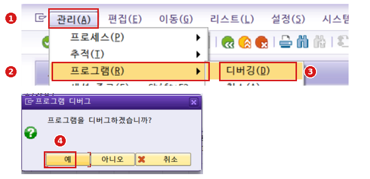
관리(A) — 메뉴바 첫 번째. 툴바에는 없습니다.프로그램(R)디버깅(D) — 아래 취소(A)는 프로세스를 강제 종료하는 것이니 잘못 누르지 않도록 주의.실행이었어도 메뉴를 여는 사이 대기로 돌아갔으면 붙을 ABAP 컨텍스트가 없습니다. 새로 고침 후 다시 확인하세요.SAPSYS, 클라이언트 000, 레포트가 SAPLHTTP_... 같은 행은 커널·시스템 처리입니다. 내 업무 프로그램이 아니라 볼 것이 없거나 /hs(시스템 디버깅)가 필요합니다.보류 + 대기중 Debug 인 행(그림 9의 ①).S_ADMI_FCD(PADM) · S_DEVELOP의 DEBUG 권한이 필요합니다./o 로 GUI 세션을 하나 더 엽니다.SELECT나 LOOP가 있는 것).SM50 → 새로 고침 → 사용자이름이 내 ID이고 상태가 실행이며 레포트가 그 프로그램인 행을 고릅니다.관리 > 프로그램 > 디버깅 → 예. 이러면 확실히 디버거가 뜹니다.프로세스를 선택하고 세부사항을 누르면 그 프로세스 한 건의 통계가 나옵니다. 디버깅과는 다른 기능이지만, "이 프로그램이 왜 이렇게 오래 도나"를 볼 때는 디버거보다 이쪽이 빠릅니다.
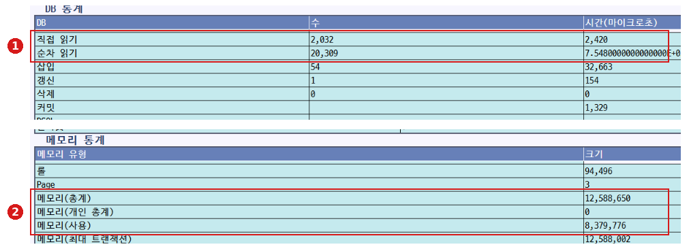
세부 조회 — DB 통계(위)와 메모리 통계(아래).
2,032건 / 순차 20,309건. 순차 읽기가 압도적으로 많으면 인덱스를 못 타고 있다는 신호입니다. SELECT 조건과 인덱스를 의심할 지점.12,588,650바이트(≈12MB), 사용 8,379,776(≈8MB). 이 값이 계속 커지면 내부테이블을 안 비우고 쌓는 중일 수 있고, 한계에 닿으면 TSV_TNEW_PAGE_ALLOC_FAILED 덤프로 이어집니다.운영 중인 업무 세션에 붙기 전에 반드시 당사자에게 알릴 것.
배치에서만 실패하는 건은 화면에서 재현이 안 됩니다. JDBG는 이미 끝난 잡을 디버깅 모드로 다시 태우는 명령입니다.
SM37 실행 → 선택 화면에서 조회 조건을 넣습니다.
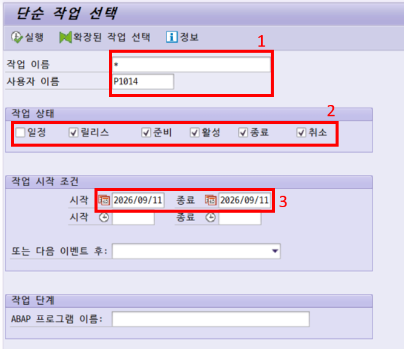
단순 작업 선택 — SM37 진입 화면.
*. 잡 이름을 알면 ZMM* 처럼 좁힙니다.종료가 체크되어 있어야 끝난 잡이 나옵니다. 빠져 있어서 "잡이 안 보인다"가 되는 흔한 지점.목록에서 대상 작업에 체크하고, 명령 필드에 JDBG 입력 후 Enter.
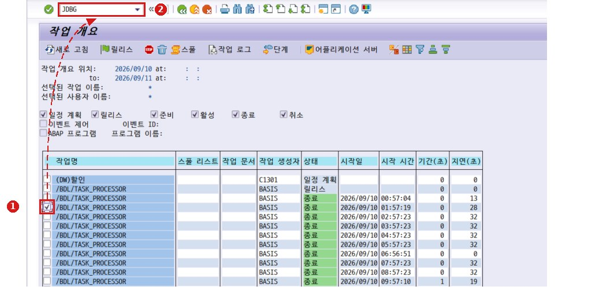
작업 개요 — 체크 → 명령 필드.
JDBG 입력 후 Enter. 잡의 스텝이 디버거로 다시 실행됩니다./h · /n · /o 도 같은 곳
잡 스텝이 실제로 다시 돌기 때문에 DB 변경 · 전표 생성 · 인터페이스 전송이 또 일어납니다. 운영기에서는 결과를 되돌릴 수 있는지 먼저 판단하세요. 안전하게는 QA에서.
CALL FUNCTION ... IN UPDATE TASK 로 등록된 로직은 COMMIT WORK 시점에 별도 업데이트 프로세스에서 실행됩니다. 그래서 일반 디버깅으로 끝까지 따라가도 그 안이 안 보입니다. "저장은 성공했다는데 DB 값이 다르다"의 정체가 대개 여기입니다.
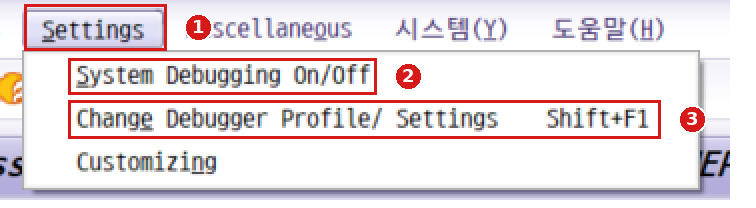
Settings 메뉴 — 항목이 셋뿐입니다.
/hs 와 같은 것. 디버거 안에서도 켜고 끌 수 있습니다.디버거에서 Shift+F1 → 다이얼로그에서 Update Debugging 체크.
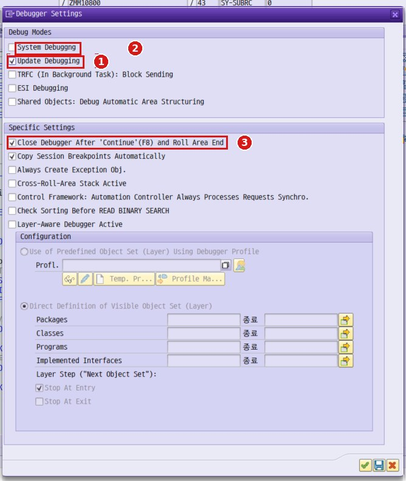
Debugger Settings 다이얼로그 — Debug Modes 그룹 안에 있습니다.
/hs 와 같은 것. 여기서도 켤 수 있습니다. (SAP GUI 표기 그대로 Debuggng 오타)F8 로 진행 → COMMIT WORK 를 지나면 업데이트 태스크가 새 디버거 창으로 뜹니다.
| 항목 | 내용 |
|---|---|
| 대상 | IN UPDATE TASK 로 등록된 FM (V1 / V2 모듈) |
| 짝꿍 T-Code | SM13 — 실패하거나 대기 중인 업데이트 레코드 조회. 실패 건은 여기서 찾는 게 더 빠릅니다 |
| 이클립스(ADT) | ADT에도 같은 기능이 있고, SAP Help의 Update Debugging 문서는 ADT 기준으로 쓰여 있습니다. SAP GUI에 없다는 뜻이 아니라 문서가 다른 도구를 다룰 뿐입니다 |
BSP · RFC · HTTP 호출 건은 1-3 외부 디버깅 사전 설정에서 다룹니다. User 필드를 실제 호출 주체 ID로 맞추는 것이 전부입니다.
덤프의 "ABAP 호출 위치"에서 소스 라인이 바로 나오는 경우가 많아, 진입 자체가 필요 없을 때도 있습니다.
"에러 메시지는 아는데 어디서 던지는지 모른다", "값이 언제 깨지는지 모른다". 이 두 경우를 위한 기능들입니다.
메시지 클래스 ID + 번호를 지정하면 그 메시지가 발생하는 순간 소스에서 정지합니다. 에러 원인 위치를 찾는 최단 경로입니다.
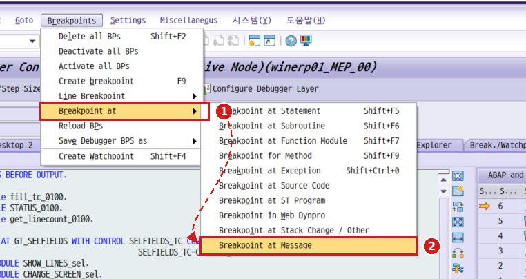
Breakpoints > Breakpoint at 에 마우스를 올리면 오른쪽으로 서브메뉴가 열립니다.Breakpoint at Message 클릭.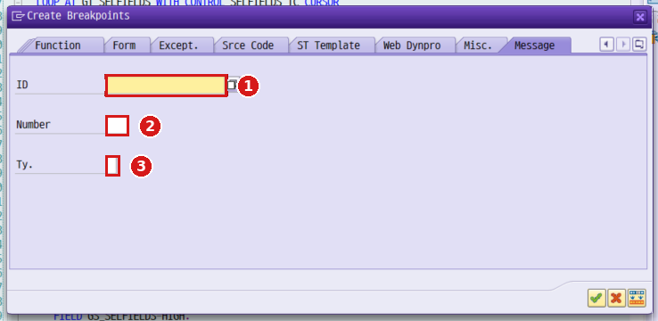
Create Breakpoints → Message 탭
ZSD)012)E/I/W/S/A. 비우면 전체 타입" 메시지 클래스 ID · 번호 확인하는 법
화면 하단 메시지 더블클릭 또는 우클릭 > 기술 정보(Technical Information)
→ Message Class / Message Number 를 그대로 입력
같은 메시지를 여러 곳에서 던지면 처음 멈춘 곳이 진짜 원인이 아닐 수 있습니다. F8로 다음 히트도 확인하세요.
| 종류 | 입력값 | 대표 활용 |
|---|---|---|
| at Statement | MESSAGE | 에러 발생 지점 전수 확인 |
CALL FUNCTION / SUBMIT | 표준 호출 경계 파악 | |
INSERT / UPDATE / MODIFY / DELETE | 어느 로직이 DB를 건드리는지 | |
COMMIT WORK | LUW 경계 · 롤백 가능한 마지막 지점 | |
| at Function Module | BAPI_GOODSMVT_CREATE | 표준 BAPI 내부 진입 |
| at Method | CLASS=>METHOD | ABAP OO · BOPF |
| at Exception | CX_SY_CONVERSION_NO_NUMBER | 덤프 원인 지점 직행 |
Breakpoints > Save Debugger BPs as … 로 BP 세트를 저장하면 다음 세션 · 다른 프로그램에서 재사용할 수 있습니다.
프로그램 범위(Debugger Layer)나 조건과 함께 쓰세요.
브레이크포인트는 위치, 워치포인트는 값입니다. 어느 줄에서 깨지는지 모를 때 쓰는 유일한 방법입니다.
디버거 상단 Watchpoint 버튼 또는 Shift+F4 → Create Watchpoint 팝업.
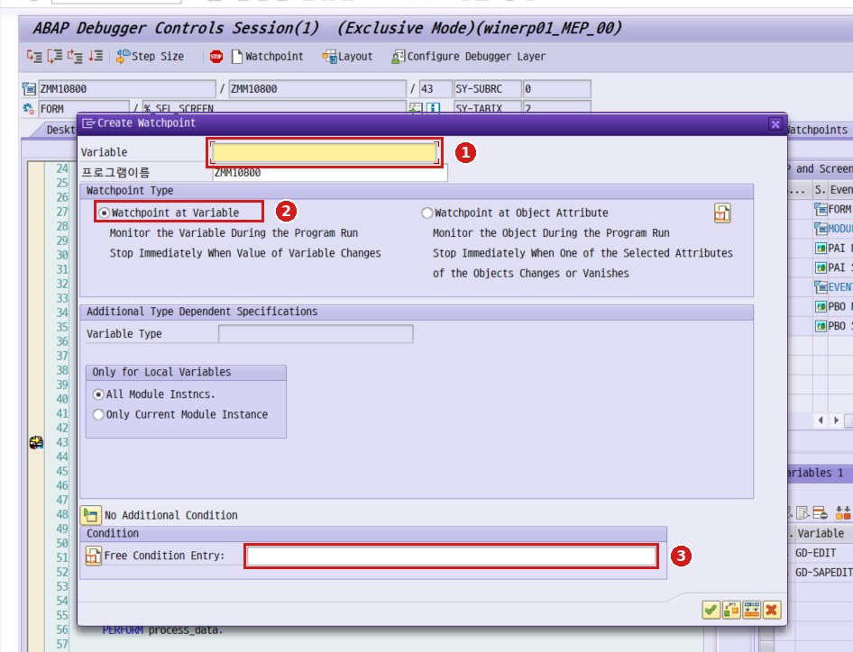
Create Watchpoint 팝업
프로그램이름은 현재 프로그램(ZMM10800)으로 자동 입력됩니다.at Object Attribute는 오브젝트 속성을 감시하는 별도 모드(ABAP OO).SY-TABIX = 100 " LOOP 100번째 회차만 GS_ITEM-MATNR = '1000123' " 특정 자재만 SY-SUBRC <> 0 " 실패한 순간 LV_AMOUNT > 1000000 " 금액이 튀는 지점
설정한 BP·WP는 Break./Watchpoints 탭에서 한번에 확인·관리합니다.
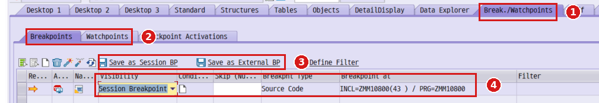
Break./Watchpoints 탭 — 등록된 항목 관리 화면.
Session Breakpoint, Breakpnt Type Source Code, Breakpoint at INCL=ZMM10800(43) / PRG=ZMM10800. 즉 어느 인클루드 몇 번째 줄인지까지 다 보입니다.목록에 Condi...(조건)와 Skip (Nu...(건너뛸 횟수) 컴럼이 있습니다. 이미 걸어둔 BP에 조건식과 "몇 번째 히트부터 멈추기"를 나중에 붙일 수 있다는 뜻입니다. LOOP 안에서 500번째만 보고 싶을 때 F8을 500번 누를 필요가 없습니다.
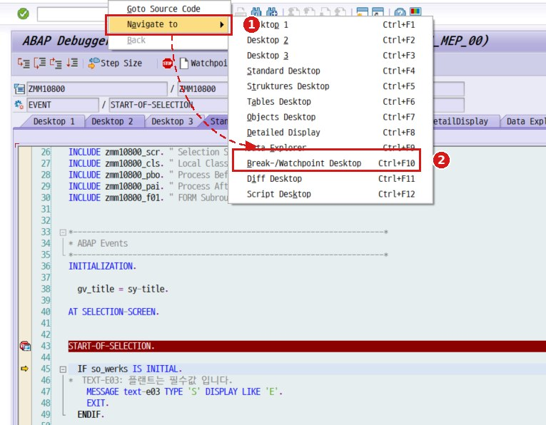
Navigate to 메뉴내부테이블 필드는 Table 탭에서 직접 조회 · 필터하는 편이 빠릅니다. Watchpoint는 매 변경을 감시하므로 무거운 기능입니다.
데이터가 없어 재현이 안 되거나, 분기를 타지 않아 확인이 안 될 때. 원인 규명용이지 결론용이 아닙니다.
SE16N 실행 → /h → 변수 GD-EDIT, GD-SAPEDIT 에 X 입력 → F8. ALV가 편집 가능 상태로 조회되고, 값 변경 후 저장 버튼으로 반영됩니다.
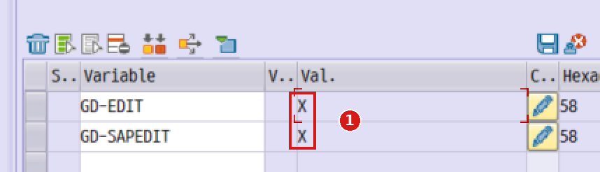
GD-EDIT, GD-SAPEDIT 두 변수의 Val. 칸에 X 입력. 우측 연필 아이콘으로 값 편집 모드.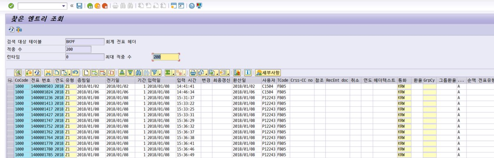
반드시 실 테이블 기준으로 수정하세요.
변경 로그도, 정합성 검증도 없이 DB가 바뀝니다. DEV / QA에서만.
| 방법 | 용도 |
|---|---|
| SY-SUBRC 조작 | 실패 분기를 성공으로 밀어넣어 이후 로직을 태워봅니다. 원인 확인용 |
| 플래그 · 권한 변수 | AUTHORITY-CHECK 직후 SUBRC, 편집 가능 플래그 등을 바꿔 화면 상태 재현 |
| Goto > Statement | 커서를 원하는 라인에 두고 점프. IF 분기를 강제로 통과 / 회피 |
| 필드 Hex 편집 | 길이 초과 · 특수문자 값 재현. 변수창 Hexa 컬럼에서 직접 입력 |
| 내부테이블 편집 | Table 탭에서 행 추가 · 삭제 · 값 변경으로 대량건 시나리오를 축소 |
소스에서 우클릭으로 바로 쓸 수 있습니다. 건너뛰고 싶은 줄에 커서를 두고 우클릭 → Goto Statement. 그 줄부터 실행이 이어집니다.
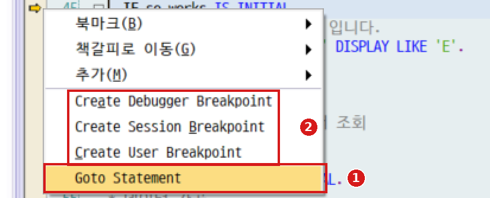
Session은 1-2의 모니터 버튼과, User는 사람 버튼(외부 BP)과 같은 것입니다.건너뛴 구간에서 채워져야 할 변수가 빈 채로 남습니다. 그 상태로 진행하면 엉뚱한 곳에서 터져서 진짜 원인을 더 찾기 어려워집니다. 분기 확인용으로만 쓰세요.
원인 규명 후에는 정상 데이터로 다시 검증해야 합니다.
| 상황 | 쓸 기능 | 진입 / 조작 |
|---|---|---|
| 흐름을 전혀 모른다 | /h + F6로 훑기 | /h → F6 반복 |
| 에러 메시지만 알고 위치를 모른다 | Breakpoint at Message | 메시지 클래스 ID + 번호 |
| 값이 언제 깨지는지 모른다 | Watchpoint (조건부) | Shift+F4 + 조건식 |
| 서브루틴 안으로 잘못 들어왔다 | Step Out | F7 (겹쳐 누르기) |
| 테스트 데이터가 없다 | SE16N 편집 | GD-EDIT / GD-SAPEDIT = X |
| 표준 트랜잭션 내부를 봐야 한다 | BP at FM / Statement + /hs | FM명 또는 CALL FUNCTION |
| 저장은 되는데 DB가 틀리다 | Update Debugging | 디버거에서 Shift+F1 → 체크 → F8 |
| 백그라운드 잡에서만 실패한다 | SM37 + JDBG | 잡 체크 → 명령 필드에 JDBG |
| 다른 유저 세션이 멈춰 있다 | SM50 프로세스 디버깅 | 프로세스 선택 → 프로그램 > 디버깅 |
| BSP · RFC · 인터페이스 건 | 외부 BP + 사전 설정 | Settings > Debugging > User = 호출 ID |
| 외부 BP를 걸었는데 안 멈춘다 | 설정 3곳 점검 | User ID / 앱서버 체크 / BP 종류 |
| 이 프로그램이 왜 느린지 보고 싶다 | SM50 세부 조회 | 프로세스 선택 → 세부사항 (디버깅 아님) |
| 특정 분기를 강제로 통과하고 싶다 | Goto Statement | 소스 우클릭 → Goto Statement |
| 덤프가 났다 | ST22 → BP at Exception | 예외 클래스명으로 직행 |
디버거로 값을 바꾸면 변경 로그도, 검증도 남지 않습니다. 원인 확인은 DEV / QA에서.
SE16N 편집은 실 테이블에서만.
COMMIT을 넘기기 전에 멈춥니다. BP at Statement COMMIT WORK 가 안전판입니다.
남겨두면 같은 ID로 도는 인터페이스 · 배치가 디버거에 걸려 멈춥니다. Delete all BPs + 설정의 User 원복.
끝난 잡을 다시 태우므로 DB 변경 · 전표 생성 · 인터페이스 전송이 또 일어납니다.
/hs 는 스텝이 폭증하고 권한 이슈가 따릅니다. 필요한 구간에서만.